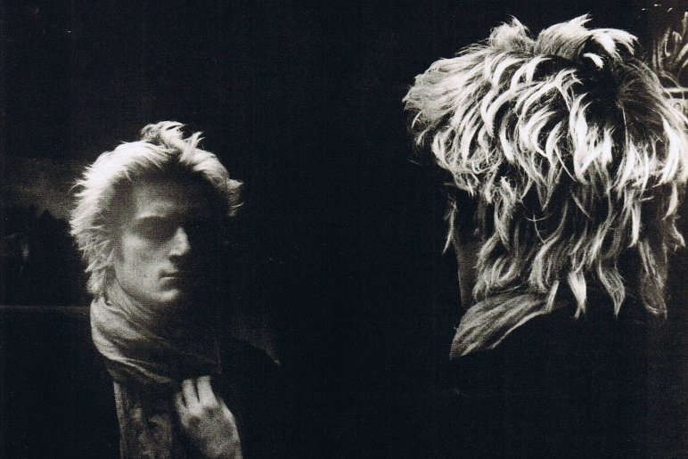

Permitan que, por el momento, me presente como William Wilson. La página inmaculada que tengo ante mí no debe mancharse con mi verdadero nombre. Éste ya ha sido el exagerado objeto del desprecio, horror y odio de mi estirpe. ¿Los vientos indignados, no han esparcido su incomparable infamia por las regiones más distantes del globo? ¡Oh, paria, el más abandonado de todos los parias! ¿No estás definitivamente muerto para la tierra? ¿No estás muerto para sus honores, para sus flores, para sus doradas ambiciones? Y una nube densa, lúgubre, limitada, ¿no cuelga eternamente entre tus esperanzas y el cielo?
Aunque pudiese, no quisiera registrar hoy, ni aquí, la narración de mis últimos años de indecible desdicha y de crimen imperdonable. Esa época -esos años recientes- llegaron repentinamente al colmo de la depravación cuyo origen es lo único que en el presente me propongo señalar. Por lo general los hombres caen gradualmente en la bajeza. En mi caso, en un sólo instante, toda virtud se desprendió de mi cuerpo como si fuera un manto. De una maldad comparativamente trivial pasé, con la zancada de un gigante, a enormidades peores que las de un Heliogábalo. Acompáñenme en el relato de la oportunidad, del único acontecimiento que provocó una maldad semejante. La muerte se acerca, y la sombra que la precede ha ejercido un influjo tranquilizador sobre mi espíritu. Al atravesar el valle de las penumbras, anhelo la comprensión -casi dije la piedad- de mis semejantes. Desearía que creyeran que, en cierta medida, he sido esclavo de circunstancias que exceden el control humano. Desearía que, en los detalles que estoy por dar, buscaran algún pequeño oasis de fatalidad en un erial de errores. Desearía que admitieran -y no pueden menos que hacerlo- que aunque hayan existido tentaciones igualmente grandes, el hombre no ha sido jamás así tentado y, sin duda, jamás así cayó. ¿Será por eso que nunca sufrió de esta manera? En realidad, ¿no habré vivido en un sueño? ¿No me muero ahora víctima del horror y del misterio de las más enloquecidas visiones sublunares?
Soy descendiente de una estirpe cuya imaginación y temperamento fácilmente excitable la destacó en todo momento; y desde la más tierna infancia di muestras de haber heredado plenamente el carácter de la familia. A medida que avanzaba en años, ese carácter se desarrolló con más fuerza y se convirtió por muchos motivos en causa de grave preocupación para mis amigos, y de acusado perjuicio para mí. Crecí con voluntad propia, entregado a los más extravagantes caprichos, y víctima de las más incontrolables pasiones. Pobres de espíritu, mentalmente débiles y asaltados por enfermedades constitucionales análogas a las mías, mis padres poco pudieron hacer para contener las malas predisposiciones que me distinguían. Algunos esfuerzos flojos y mal dirigidos terminaron en un completo fracaso para ellos y, naturalmente, en un triunfo total para mí. De allí en adelante mi voz fue ley en esa casa; y a una edad en que pocos niños han abandonado los andadores, quedé a merced de mi propia voluntad y me convertí, de hecho, si no de derecho, en dueño de mis actos.
Mis más tempranos recuerdos de la vida escolar se relacionan con una casa isabelina, amplia e irregular, en un pueblo de Inglaterra cubierto de niebla, donde se alzaban innumerables árboles nudosos y gigantescos, y donde todas las casas eran excesivamente antiguas. En verdad, esa vieja y venerable ciudad era un lugar de ensueño, propicio para la paz del espíritu. En este mismo momento, en mi fantasía, percibo el frío refrescante de sus avenidas profundamente sombreadas, inhalo la fragancia de sus mil arbustos, y me vuelvo a estremecer con indefinible deleite ante el sonido hueco y profundo de la campana de la iglesia que quebraba, cada hora, con su hosco y repentino tañido, el silencio de la melancólica atmósfera en la que el recamado campanario gótico se engastaba y dormía.
Tal vez el mayor placer que me es dado alcanzar hoy en día sea el demorarme en recuerdos de la escuela y todo lo que con ella se relaciona. Empapado como estoy por la desgracia -una desgracia, ¡ay! demasiado real- se me perdonará que busque alivio, aunque leve y efímero, en la debilidad de algunos detalles por vagos que sean. Esos detalles, triviales y hasta ridículos en sí mismos, asumen en mi imaginación una extraña importancia por estar relacionados con una época y un lugar en donde reconozco la presencia de las primeras ambiguas admoniciones del destino que después me envolvieron tan completamente en su sombra. Permítanme, entonces, que recuerde.
Ya he dicho que la casa era antigua e irregular. Se erguía en un terreno extenso y un alto y sólido muro de ladrillos, coronado por una capa de cemento y de vidrios rotos, rodeaba la propiedad. Esta muralla, semejante a la de una prisión, era el límite de nuestros dominios; lo que había más allá sólo lo veíamos tres veces por semana: una vez los sábados a la tarde cuando, acompañados por dos preceptores, se nos permitía realizar un breve paseo en grupo a través de alguno de los campos vecinos; y dos veces durante el domingo, cuando marchábamos de modo igualmente formal a los servicios matinales y vespertinos de la iglesia del pueblo. El director de la escuela era también el pastor de la iglesia. ¡Con qué profunda sorpresa y perplejidad lo contemplaba yo desde nuestros bancos lejanos, cuando con paso solemne y lento subía al púlpito! Ese hombre reverente, de semblante tan modestamente benigno, de vestiduras tan brillosas y clericalmente ondulantes, de peluca minuciosamente empolvada, rígida y enorme… ¿podía ser el mismo que poco antes, con rostro amargo y ropa manchada de rapé, administraba, férula en mano, las leyes draconianas de la escuela? ¡Oh, gigantesca Paradoja, demasiado monstruosa para tener solución!
En un ángulo de la voluminosa pared rechinaba una puerta aun más voluminosa. Estaba remachada y tachonada con tomillos de hierro y coronada con picas dentadas del mismo metal. ¡Qué impresión de profundo temor inspiraba! Nunca se abría, salvo para las tres salidas y regresos mencionados; por eso, en cada crujido de sus enormes goznes encontrábamos la plenitud del misterio, un mando de asuntos para solemnes comentarios o para aun más solemnes meditaciones.
El extenso muro era de forma irregular, con abundantes recesos espaciosos. De éstos, tres o cuatro de los más grandes constituían el campo de juegos. El piso estaba nivelado y cubierto de grava fina y dura. Recuerdo bien que no tenía árboles, ni bancos, ni nada parecido. Por supuesto que quedaba en la parte posterior de la casa. En el frente había un pequeño cantero, plantado con boj y otros arbustos; pero a través de esta sagrada división sólo pasábamos en contadas ocasiones, como el día de llegada o el de partida del colegio o quizás, cuando algún padre o amigo nos pasaba a buscar y nos íbamos alegremente a disfrutar de la Navidad o de las vacaciones de verano a nuestras casas.
¡Pero la casa! ¡Qué extraño era aquel viejo edificio! Y para mí, ¡qué palacio encantado! Realmente sus recovecos eran infinitos, así como sus incomprensibles subdivisiones. En cualquier momento resultaba difícil afirmar con seguridad en cuál de sus dos pisos nos hallábamos.
Entre un cuarto y otro siempre había tres o cuatro escalones que subían o bajaban. Además, las alas laterales eran innumerables -inconcebibles- y volvían de tal modo sobre sí mismas que nuestras ideas más exactas con respecto a la casa en sí, no diferían demasiado de las que teníamos sobre el infinito. Durante los cinco años de mi residencia, nunca pude cerciorarme con precisión de en qué remoto lugar estaban situados los pequeños dormitorios que nos habían asignado a mí y a otros dieciocho o veinte alumnos.
El aula era el cuarto más grande de la casa -y desde mi punto de vista- el más grande del mundo entero. Era muy largo, angosto y desconsoladoramente bajo, con puntiagudas ventanas góticas y cielo raso de roble. En un ángulo remoto y aterrorizante había un cerramiento cuadrado de unos ocho o diez pies, allí se encontraba el sanctum donde rezaba “entre una clase y otra” nuestro director, el reverendo doctor Bransby. Era una estructura sólida, de puerta maciza, y antes de abrirla en ausencia del “dómine” hubiéramos preferido morir por la peine forte et dure. En otros ángulos había dos cerramientos similares sin duda mucho menos reverenciados, pero no por eso menos motivo de terror. Uno de ellos era la cátedra del preceptor “clásico”, otro el correspondiente a “inglés y matemáticas”. Dispersos por el salón, entrecruzados en interminable irregularidad, había innumerables bancos y pupitres, negros, viejos, carcomidos por el tiempo, tapados por pilas de libros manoseados, y tan cubiertos de iniciales, nombres completos, figuras grotescas y otros múltiples esfuerzos del cortaplumas, que habían perdido lo poco que en lejanos días les quedaba de su forma original. En un extremo del salón había un inmenso balde de agua, y en el otro un reloj de formidables dimensiones.
Encerrado entre las macizas paredes de esta venerable academia, pasé sin tedio ni disgustos los años del tercer lustro de mi vida.
¿Quieres contactar con el autor?Envía un email a Edgar Allan Poe
Aquí